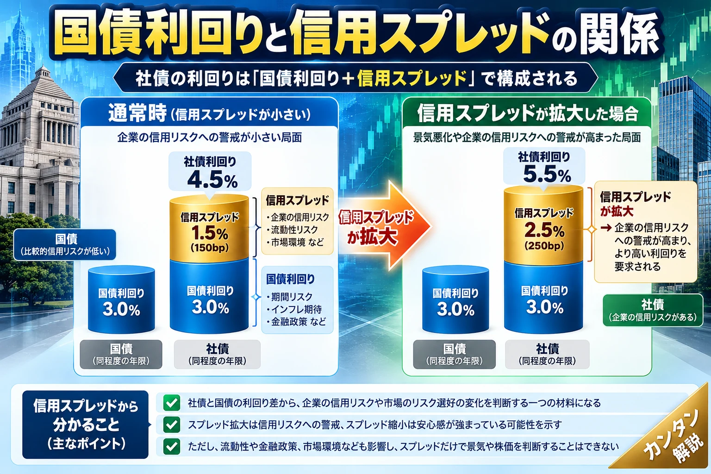

話題・トレンド｜債券市場の基礎知識
信用スプレッドとは？社債と国債の金利差から何が分かるの？初心者向けに解説
「信用スプレッド拡大」「社債市場の警戒感」。ニュースで見る利回りの差は、企業の信用リスクだけでなく、市場の流動性や景気への見方も映します。国債利回りの上昇との違いを中心に解説します。

1. 信用スプレッドとは？
信用スプレッド（Credit Spread）は、信用リスクなどが異なる債券の利回り差です。初心者向けには、同じ通貨で残存期間が近い社債と国債の利回り差と考えると理解しやすくなります。 企業の倒産確率そのものではありません。 流動性、税制、需給、市場のリスク選好なども反映します。
2. なぜ社債は国債より利回りが高いことが多いの？
社債は企業が発行し、国債は国が発行します。社債では企業業績や資金繰りの悪化による不履行の可能性が意識されるため、追加の利回りを求められる傾向があります。
| 項目 | 国債 | 社債 |
|---|---|---|
| 発行主体 | 国 | 企業 |
| 返済原資 | 税収・財政運営等 | 事業収益・資金調達等 |
| 主な信用リスク | 国家の信用・通貨・財政状況 | 企業の財務・事業・信用力 |
| 利回り | 比較の基準に使われる場合がある | 上乗せ利回りが求められることが多い |
3. 信用スプレッドの計算方法
信用スプレッド＝社債利回り－比較対象の国債利回り
| 架空の例 | 利回り |
|---|---|
| 国債 | 3.0％ |
| 社債 | 4.5％ |
| 差 | 1.5％ポイント＝150bp |
1bp（ベーシスポイント）は0.01％ポイントです。上記は同じ通貨・近い年限を仮定した説明用の数字です。実務では残存期間、利回り曲線、オプションの有無、国債以外の基準金利などを調整する場合があります。
4. 信用スプレッドが拡大するとは？
企業の返済能力への不安が強まると、投資家は社債に高い上乗せ利回りを求める場合があります。
5. 信用スプレッドが縮小するとは？
企業業績や景気への安心感が強まり、投資家が要求する上乗せ利回りが小さくなることです。社債への需要増加や市場流動性の改善でも縮小する場合があります。ただし縮小は企業の安全性や将来の返済を保証しません。
6. 国債利回り上昇と信用スプレッド拡大は違う？
この記事で最も重要な区別です。概念的には 社債利回り ≒ 基準となる国債利回り ＋ 信用スプレッド と整理できます。
| 架空ケース | 国債利回り | 信用スプレッド | 社債利回り |
|---|---|---|---|
| 共通の出発点 | 3.0％ | 1.5％ | 4.5％ |
| A：国債金利が上昇 | 4.0％ | 1.5％（不変） | 5.5％ |
| B：信用不安が拡大 | 3.0％（不変） | 2.5％ | 5.5％ |
同じ社債利回り5.5％でも、Aは基準金利の上昇、Bは上乗せ部分の拡大です。国債利回りが上昇しながら信用スプレッドが縮小することもあります。社債利回りだけで信用不安を判断しないことが重要です。
7. 投資適格債とハイイールド債の違い
一般に格付けが一定水準以上の債券を投資適格債、それより低い格付けの債券をハイイールド債と呼びます。例えばS&PやFitchではBBB-以上、Moody’sではBaa3以上が投資適格の目安です。格付け体系によって表記は異なります。ハイイールド債は信用リスクが高い傾向があり、利回りも高くなりがちですが、 高い利回りは利益を保証しません。
8. 信用格付けとは？
信用格付けは、企業や債券の債務履行能力・信用力について格付け会社が示す評価です。企業全体への格付けと個別債券の格付けが異なることもあります。格付けは将来の返済保証ではなく、財務や事業環境の変化によって格上げ・格下げされます。
9. 景気後退と信用スプレッドの関係
10. 信用スプレッドと株価の関係
信用スプレッドの拡大は企業の借入コスト上昇や信用不安を反映し、株式市場の評価にも影響する場合があります。ただし株価は利益見通し、成長期待、金利、需給などでも変動します。信用スプレッドが拡大しても株価が必ず下がるわけではありません。
11. 信用スプレッドと市場の流動性
社債の買い手が少なく売買しにくい場合、投資家はその不便さへの上乗せ利回りを求めることがあります。つまり観測されるスプレッドには 純粋な倒産リスク以外の要素 も含まれます。詳しくは 市場の流動性とは？ をご覧ください。
12. 信用スプレッドと金融政策
利上げ・利下げやQT（量的引き締め）は企業の資金調達条件、景気見通し、市場のリスク選好に影響し、信用スプレッドが変化する場合があります。ただし利上げ局面でも景気が堅調なら縮小する可能性があり、 利上げ＝必ず拡大 ではありません。関連する金融政策の解説は コラム一覧 から確認できます。
13. 信用スプレッドとタームプレミアムは何が違う？
信用スプレッドは社債などの利回りが基準利回りをどれだけ上回るかを見る概念です。一方、タームプレミアムは長期債を保有する期間リスクに対して投資家が要求する上乗せ収益の概念です。 信用リスクの上乗せと期間リスクの上乗せは同じではありません。 両者の変化が同時に起こることはあります。
14. 信用スプレッドはどこで確認できる？
投資適格社債、ハイイールド社債の指数スプレッドやOAS（オプション調整後スプレッド）が参考になります。OASは期限前償還など債券のオプション特性を調整して比較する指標です。米国の参考先として FRED：米国投資適格社債OAS 、 FRED：米国ハイイールド社債OAS があります。各指数で対象債券、格付け、年限、算出方法が異なるため単純比較は避けましょう。
15. 信用スプレッドのニュースを見るときのポイント
- どの国・通貨の社債か
- 投資適格債かハイイールド債か
- どの指数・指標を使っているか
- 拡大・縮小の幅と期間はどの程度か
- 国債利回り自体はどう動いたか
- 企業業績や格付けに変化があるか
- 社債市場の流動性はどうか
- 株価や景気指標はどう動いたか
16. 直近の信用スプレッドの動向
本記事は常設の仕組み解説です。最新の数値は掲載時点で検証できていないため記載していません。更新時には対象指数、観測日、単位（％ポイントまたはbp）、公表元、比較期間を明記してください。
一次情報の確認先： FRED 、 FRB 。FRED掲載のICE BofA関連系列は指数提供元・利用条件・更新日にも注意してください。
17. FAQ
信用リスクなどが異なる債券の利回り差で、社債と同程度の年限の国債の差が代表例です。
単純な例では社債利回りから同通貨・近い年限の国債利回りを引きます。
1bpは0.01％ポイントです。100bpは1％ポイントです。
社債に求められる上乗せ利回りが大きくなり、信用不安や流動性悪化などが意識されている場合があります。
違います。前者は基準金利の変化、後者は基準金利に対する上乗せ部分の変化です。
一般に投資適格より低い格付けの債券で、信用リスクと利回りが高い傾向があります。
景気への警戒を示す参考材料ですが、拡大したから必ず景気後退になるわけではありません。
前者は社債などの基準金利への上乗せ、後者は長期債の期間リスクに対する上乗せを考える概念です。
信用スプレッドとは何ですか？
信用スプレッドはどう計算しますか？
1bpとは何ですか？
信用スプレッドが拡大すると何が起こりますか？
国債利回り上昇と信用スプレッド拡大は同じですか？
ハイイールド債とは何ですか？
信用スプレッドは景気後退を予測できますか？
信用スプレッドとタームプレミアムは何が違いますか？
18. まとめ
信用スプレッドは社債と国債などの利回り差を表し、信用リスクへの警戒を考える材料になります。ただし倒産確率そのものではなく、流動性や需給にも左右されます。国債利回り上昇とスプレッド拡大は別の現象です。格付け、景気、金融政策、株価と合わせて読み、指標の対象・算出方法を確認しましょう。
関連記事・学習ガイド
市場の流動性とは？ ／ 投資コラム一覧 。国債、長期金利、金融引き締め、タームプレミアムなどはコラム一覧から参照してください。未確認の個別記事URLは推測していません。
免責事項： 本記事は一般的な金融教育情報であり、特定の債券・金融商品への投資を推奨するものではありません。実際の取引条件、信用格付け、最新の公表情報は各公式資料をご確認ください。